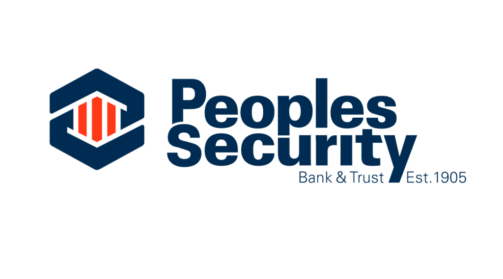
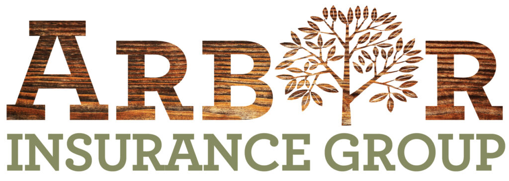
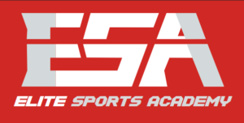
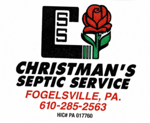

SPYA Sports
Baseball
From first swings to league baseball.
Program Overview
T-Ball
An introduction to hitting and fielding using a batting tee, with coaches on the field to teach the fundamentals. Players need a glove; the program supplies bats. Confirm current age eligibility with the commissioner.
Coach Pitch
Coach-pitched baseball builds hitting, fielding, and teamwork. Players need their own glove. Ask about the current practice location and schedule.
Grasshopper
A transition toward player pitching, with coach support under league rules. Players need their own glove and bat.
Parkland Youth League
PYL offers developmental National League and competitive American League teams. Divisions include Biddy, Midget, Knee-Hi, and Majors. American League selection requires tryouts.
Lehigh Valley League
A competitive spring pathway selected through tryouts. Players are expected to prioritize their SPYA team; residency requirements apply.
Junior and Senior Connie Mack
Junior and Senior Connie Mack provide additional competitive baseball pathways. Ask about current age eligibility, tryouts, roster selection, and summer commitments.
Senior Legion
Senior Legion offers an older-player pathway through American Legion Baseball. Confirm current eligibility and selection arrangements before registering.
Tryouts, Residency, and Waitlists
Selection and residency rules differ by league. Tournament players should confirm the applicable eligibility rules with the commissioner. When a division reaches capacity, a waitlist may be maintained; additional teams depend on player numbers and a head coach.
Baseball Program Sponsors
Businesses recognized on SPYA’s baseball page.



